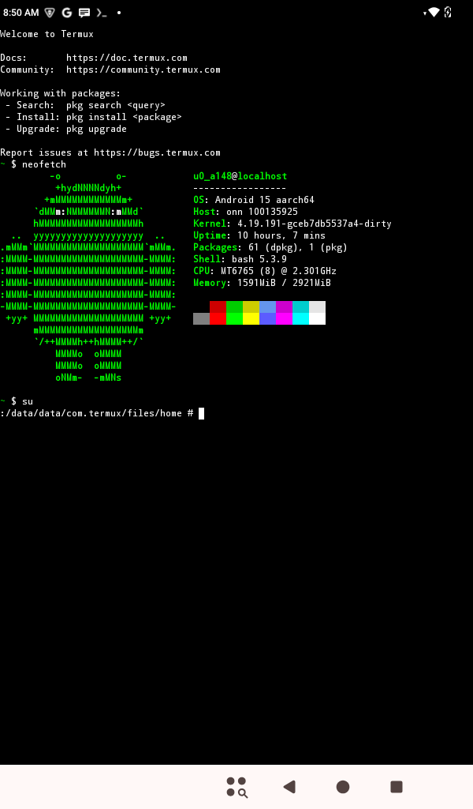

Onn Tablet Gen 4 (onn-obsidian)
| This device is marked as not booting. Status: No postmarketOS device package currently exists. A vendor-derived arm64 kernel boots through the stock boot chain, but postmarketOS itself has not been installed or booted. |
|
 A screenshot of a rooted 7" Onn Tablet Gen 4 on 64-bit kernel running Termux | |
| Manufacturer | Onn |
|---|---|
| Name | Tablet Gen 4 7" |
| Codename | onn-obsidian |
| Released | 2024 |
| Type | tablet |
| Hardware | |
| Chipset | MediaTek MT6765 |
| CPU |
8× ARM Cortex-A53 up to 2.2 GHz |
| GPU | PowerVR GE8320 |
| Display | 7" 1024×600 IPS LCD |
| Storage | 32 GB |
| Memory | 3 GB |
| Architecture | armv7 |
| Software | |
Original software
The software and version the device was shipped with.
|
Android (Go) 14 |
Extended version
The most recent supported version from the manufacturer.
|
Android (Go) |
| FOSS bootloader | no |
| postmarketOS | |
Mainline
Instead of a Linux kernel fork, it is possible to run (Close to) Mainline.
|
no |
pmOS kernel
The kernel version that runs on the device's port.
|
4.19.191 [note 1] |
Unixbench score
Unixbench Whetstone/Dhrystone score. See Unixbench.
|
0.0 |
{kind=link}
The Onn Tablet Gen 4 7" is a low-cost Android tablet sold by Walmart beginning in 2024. Its retail model number is 100135924, its Lightcomm board designation is MID7021, and its FCC ID is XMF-MID7021.
The tablet was manufactured by Lightcomm Technology and distributed under Walmart's Onn private-label brand. It shipped with Android 14 Go edition, 3 GB of memory, 32 GB of internal storage and a 7-inch 1024×600 IPS display.
The internal Android board name is mid7021_mq. The stock 32-bit build commonly identifies the board configuration as mid7021_mq_32.
postmarketOS has not yet been booted on this device. All working Linux and 64-bit userspace results described below come from Android/AOSP bring-up work performed by the POCA project and should not be interpreted as postmarketOS feature support.
Contributors
- poca
Users owning this device
Architecture
The MediaTek MT6765 contains eight 64-bit ARM Cortex-A53 CPU cores. The stock firmware nevertheless uses a completely 32-bit Android configuration:
ro.zygote=zygote32
ro.product.cpu.abilist64=
ro.config.low_ram=true
This is a firmware choice rather than a hardware restriction.
A Linux 4.19.191 AArch64 kernel has been booted on the device through the stock MediaTek boot chain. Custom Android 14 and Android 15 arm64 userspaces have subsequently reached complete userspace boot, including:
- first-stage and second-stage init
- logical-partition mounting and
switch_root - SELinux enforcing mode
- Binder and system services
- SurfaceFlinger and the graphical interface
- USB ADB
- Wi-Fi and Bluetooth
- sensors and automatic rotation
- recovery and fastbootd
These results prove that the stock bootloader can load an arm64 kernel and that the hardware is not limited to armv7. They do not prove that a postmarketOS initramfs or root filesystem works.
Boot chain and partition layout
The device uses the stock MediaTek boot chain:
preloader -> LK -> GenieZone -> Linux
The bootloader is proprietary. Secure boot is enabled for the early boot stages, and the original OEM RSA signing key is unavailable. Modified images of LK, GenieZone or related early-boot components should therefore not be used.
| WARNING: Do not flash the preloader, LK, GenieZone, SBC or seccfg partitions. Development should normally be restricted to boot, super, vbmeta and dtbo. Damage to the early boot chain may require MediaTek BROM recovery and can permanently brick the device if recovery access is lost. |
The device uses an A/B partition layout with dynamic partitions. Important partitions include:
-
boot_aandboot_b supermetadata-
vbmeta_aandvbmeta_b -
dtbo_aanddtbo_b
Although init_boot_a, init_boot_b, vendor_boot_a and vendor_boot_b exist in the GPT, they are zero-filled and unused by the stock MID7021 firmware.
The tablet instead boots from an Android boot-image-header-v2 image in boot_a or boot_b. This image contains the kernel, DTB and the complete ramdisk.
There is no dedicated recovery partition. Recovery and fastbootd must be included in the ramdisk stored in the active boot slot.
How to enter flash mode
LK fastboot
From Android:
$ adb reboot bootloader
With the tablet powered off, hold Volume Up and Power to enter the boot-mode menu, then select fastboot.
The active slot should be checked before flashing:
$ fastboot getvar current-slot
Fastbootd
When a compatible recovery ramdisk is installed:
$ adb reboot fastboot
$ fastboot getvar is-userspace
A successful fastbootd entry reports:
is-userspace: yes
The stock boot image should not be assumed to contain a functional fastbootd environment.
MediaTek preloader and BROM
The tablet can also be accessed with mtkclient. Shut it down completely and reconnect it over USB while mtkclient is waiting for the MediaTek device.
BROM mode is the recovery path when an invalid boot image prevents entry into LK fastboot. Back up the GPT and original partitions before modifying the tablet.
Installation
No postmarketOS device or kernel package currently exists.
A future port can be initialized with:
$ pmbootstrap init
$ pmbootstrap install
$ pmbootstrap export
The generated boot image will need to use Android boot image header version 2 and include the kernel, DTB and initramfs in a single image. The stock bootloader does not use the otherwise-present init_boot or vendor_boot partitions.
Before flashing, inspect the GPT and active slot:
$ mtk printgpt
$ fastboot getvar current-slot
For slot A:
$ fastboot flash boot_a boot.img
or with mtkclient:
$ mtk w boot_a boot.img
For slot B, replace boot_a with boot_b.
| WARNING: The commands above are development examples. No postmarketOS image has been verified on this tablet. Preserve known-good copies of both stock boot slots before flashing. |
Kernel source
Lightcomm and Walmart have not published a corresponding GPL kernel source release for the MID7021.
The working arm64 kernel port uses Motorola's public MediaTek kernel as its base:
- Motorola kernel-mtk
- Hawaii+ Lite / MT6765 lineage
- Linux 4.19.191
hawaiipl-perd_defconfig- MediaTek
k65v1_64_bspancestry
This source is not an exact MID7021 source release. Device-specific drivers and configuration were recovered or adapted separately.
Public Motorola MediaTek connectivity sources were also used for the arm64 Wi-Fi stack. Relevant repositories include the gen4m WLAN core, common WMT, WLAN adaptor and MT66xx Bluetooth modules. The Android 12 STA32 branches contain code compatible with this kernel generation.
UART and debugging
UART bootloader output is available, but normal Linux kernel console output is suppressed after the GenieZone stage. This differs from some other Onn tablets on which kernel messages remain visible directly over UART.
The Android arm64 bring-up therefore relied heavily on persistent storage and instrumented kernels:
- MediaTek
expdb -
/metadatacapture files -
ramoops/pstore - kernel reboot and panic notifiers
- the embedded kernel configuration exposed through
CONFIG_IKCONFIG
The kernel configuration can be recovered directly from the built kernel image by extracting the gzip stream between the IKCFG_ST and IKCFG_ED markers.
Hardware inventory
| Component | Detail |
|---|---|
| SoC | MediaTek MT6765 |
| CPU | Eight ARM Cortex-A53 cores |
| GPU | PowerVR GE8320 |
| PMIC | MediaTek MT6357 |
| Display | 7-inch 1024×600 IPS LCD |
| Known panel | SAT070HK30I21Y03 |
| Touch controller | Hynitron CST226SE |
| Touch coordinate range | Controller firmware reports approximately 1024×1024 raw coordinates, which must be scaled to the 1024×600 panel |
| Charger | ETA6937-compatible charger |
| Audio codec | MT6357 codec |
| Wi-Fi | MediaTek CONNAC/gen4m |
| Bluetooth | MediaTek connectivity subsystem |
| Rear camera | 2 MP; sensor identified during bring-up as c2599 |
| Front camera | 2 MP GalaxyCore |
| USB | USB-C connector using a MediaTek MUSB USB 2.0 controller |
Porting notes
Display
The panel driver used by the arm64 kernel is for the SAT070HK30I21Y03 panel. The vendor display stack uses a PowerVR-era MediaTek framebuffer and composer implementation rather than a modern upstream DRM stack.
The stock device has a natural portrait orientation of 600×1024. Some 64-bit Android donor composer implementations instead expose it as a landscape 1024×600 display. This is a vendor composer behavior and not a physical panel-resolution difference.
An early display artifact consisting of two red bars was fixed by disabling the vendor rounded-corner overlay:
round_corner_en=0
Touchscreen
The CST226SE controller reports a roughly square 1024×1024 raw coordinate space. Directly clamping those coordinates to 1024×600 produces incorrect Y-axis tracking.
The working arm64 driver scales coordinates using:
scaled = raw * panel_size / controller_range
Some touch-controller configuration persists outside /data. A normal factory reset may therefore not restore calibration after switching between substantially different firmware builds.
Graphics
The vendor graphics stack uses PowerVR-specific ION heaps. The framebuffer allocator requests heap ID 11, corresponding to ION_HEAP_TYPE_FB. Vendor-derived arm64 kernels that omit this heap fail display allocation with -ENODEV.
The Android bring-up temporarily mapped framebuffer allocations to the multimedia heap. This is relevant to vendor-kernel ports but is unlikely to apply directly to a future mainline DRM implementation.
Connectivity
The stock Wi-Fi and Bluetooth kernel modules are 32-bit ARM modules and cannot be loaded by an AArch64 kernel.
Working arm64 modules were rebuilt from Motorola's public MediaTek connectivity sources against the exact kernel build. Important modules include:
wmt_drv.kowmt_chrdev_wifi.kowlan_drv_gen4m.kobt_drv_connac1x.ko
The board uses its own connectivity crystal. A donor configuration containing:
co_clock_flag=1
caused the connectivity firmware to stall during its STP handshake. Matching the stock configuration with automatic clock detection fixed this:
co_clock_flag=0
Charger and thermal configuration
The correct charger is ETA6937-compatible. A donor kernel configured for the absent ETA6963 charger caused invalid battery and shutdown behavior.
Several donor thermal zones also referred to hardware not present on this board. In particular, an invalid BTSMDPA reading could trigger emergency shutdown and charging throttling. Hardware descriptions should be checked against the stock 32-bit firmware rather than assumed from another MT6765 device.
Audio
The tablet uses the MT6357 codec. A donor kernel in which the codec component failed to probe could dereference an uninitialized codec structure during suspend.
The stock firmware registers the MediaTek sound card successfully, confirming that audio support is a driver and device-tree integration problem rather than missing hardware.
Notes
- ↑ This is a vendor-derived arm64 kernel used for Android/AOSP bring-up. It has not yet been packaged for or booted with postmarketOS.